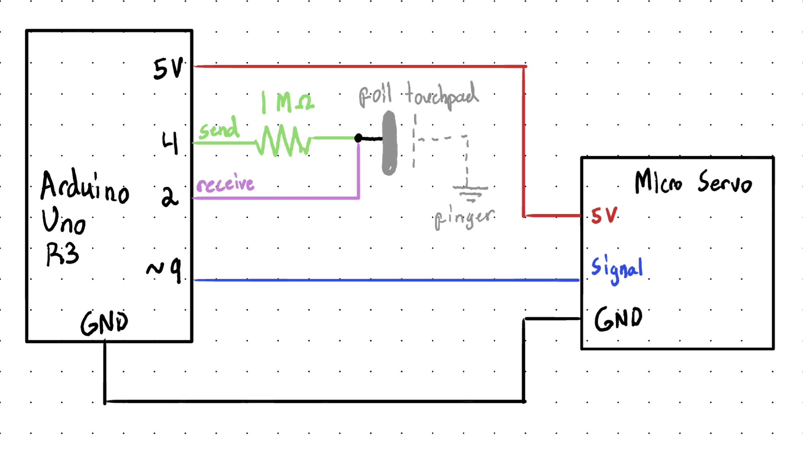
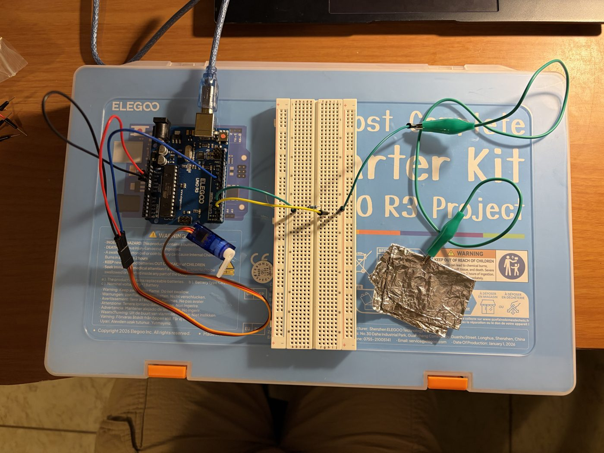
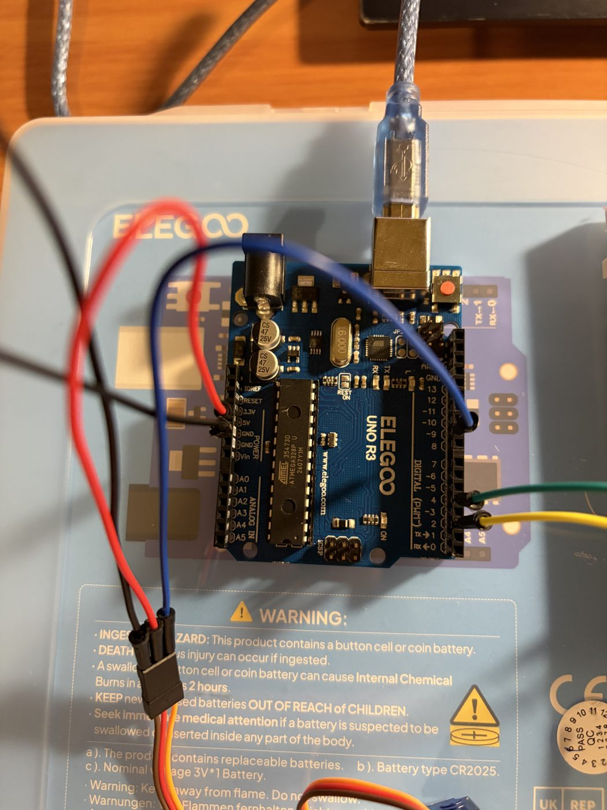
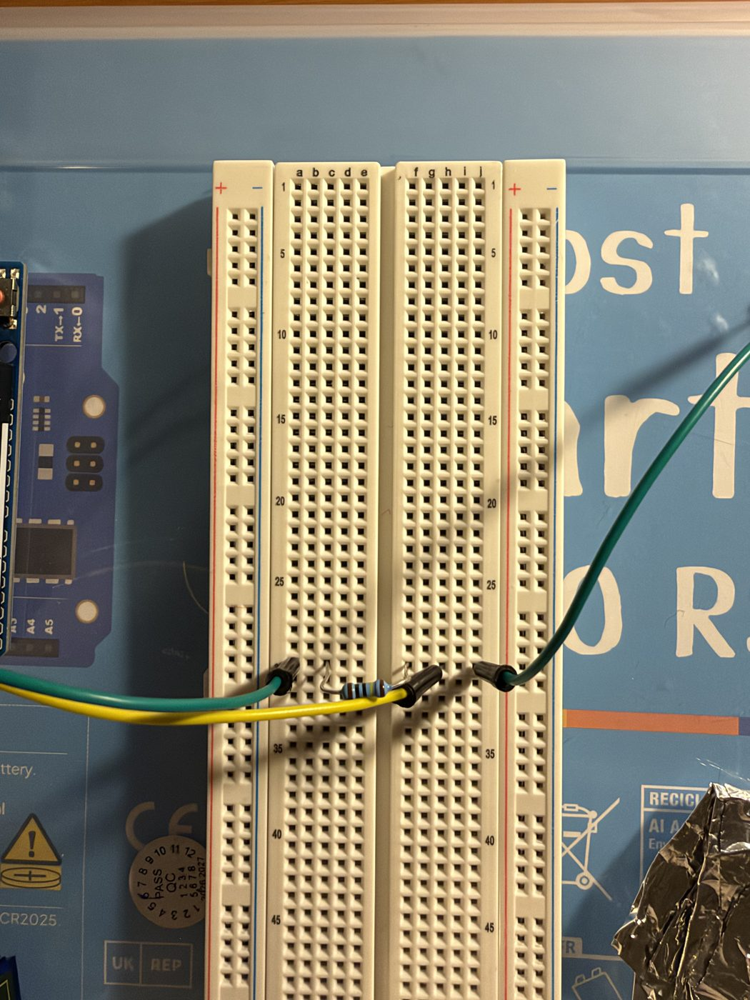
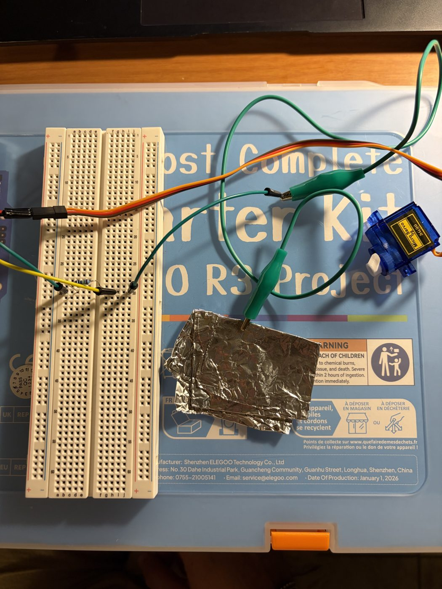
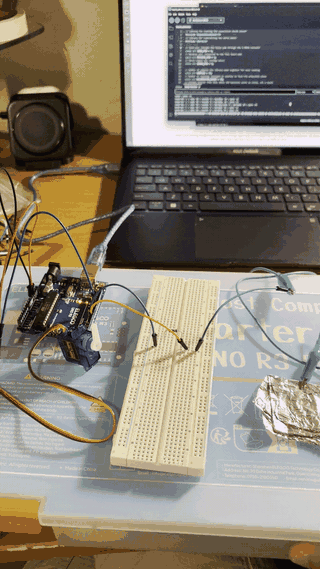
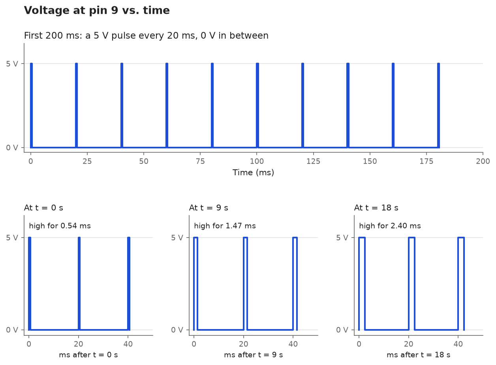

A servo motor sweeps in a 180° arc, with a capacitive button which when touched increases the speed.
CapacitiveSensor.h: reads the touch pad.Servo.h: moves the servo to an angle.
The library sets the send pin high and times how long the recive pin takes to go to high too. I used foil as a capacitor. When I touch the foil my body adds more capacitance, so the pin will take longer to charge. The time depends on the resistor and the capacitance:
τ = R × C No touch (pad ≈ 10 pF): 1 MΩ × 10 pF = 10 µs Touching (hand ≈ 100 pF): 1 MΩ × 100 pF = 100 µs
A touch takes about 10 times longer, so the reading is much bigger. I picked a 1 MΩ resistor because it was suggested by the library for direct touch. A bigger resistor would detect my hand from further away.
The servo doesn't need a resistor since it has its own circuit inside it. I supply it with 5V and use a PWM pin for control, so pin 9 (PWM pin) uses barely any current. The servo will use 100-250 mA which the Arduino can supply over USB.




// Library for reading the capacitive touch sensor
#include <CapacitiveSensor.h>
// Library for controlling the servo motor
#include <Servo.h>
// Send pin: charges the touch pad through the 1 MOhm resistor
const int SEND_PIN = 4;
// Receive pin: connected to the foil touch pad
const int RECEIVE_PIN = 2;
// Servo signal pin (orange wire)
const int SERVO_PIN = 9;
// Number of samples the library adds together for each reading (fewer = faster reading)
const int SAMPLES = 10;
// Number of readings averaged at startup to find the untouched value
const int CALIBRATION_READS = 50;
// Changes smaller than this above the baseline count as noise, not a touch
const long NOISE_THRESHOLD = 30;
// How far above the baseline a full-hand touch reads (measured in the Serial Monitor)
const long TOUCH_RANGE = 1000;
// Milliseconds per degree with no touch (same as the Sweep example: slow)
const int SLOWEST_DELAY = 30;
// Milliseconds per degree with a full touch (fast)
const int FASTEST_DELAY = 3;
// Set up the capacitive sensor: first parameter is send, second is receive
CapacitiveSensor touchSensor = CapacitiveSensor(SEND_PIN, RECEIVE_PIN);
// Create the Servo object to control the servo
Servo myservo;
// Current servo position in degrees
int pos = 0;
// Untouched sensor reading, found during calibration
long baseline = 0;
// Smoothed touch strength (0 = no touch)
long smoothedTouch = 0;
// Runs once at startup
void setup() {
// Start the Serial Monitor at 115200 baud so printing doesn't slow the servo down
Serial.begin(115200);
// Turn off the library's auto-calibration because this sketch calibrates itself
touchSensor.set_CS_AutocaL_Millis(0xFFFFFFFF);
// Tell the user not to touch the pad
Serial.println("Calibrating... don't touch the pad");
// Running total of the calibration readings
long total = 0;
// Take several readings while nobody is touching the pad
for (int i = 0; i < CALIBRATION_READS; i++) {
// Add one 10-sample reading to the total
total += touchSensor.capacitiveSensor(SAMPLES);
// Short pause between readings
delay(10);
}
// The average untouched reading becomes the baseline
baseline = total / CALIBRATION_READS;
// Print the baseline label
Serial.print("Baseline: ");
// Print the baseline value
Serial.println(baseline);
// Attach the servo on pin 9 after calibrating, so its movement can't affect the baseline
myservo.attach(SERVO_PIN);
}
// Runs over and over
void loop() {
// Go from 0 degrees to 180 degrees in 1 degree steps
for (pos = 0; pos <= 180; pos += 1) {
// Tell the servo to go to the position in 'pos'
myservo.write(pos);
// Wait for a time set by the touch sensor (shorter wait = faster sweep)
delay(readStepDelay());
}
// Go from 180 degrees back to 0 degrees in 1 degree steps
for (pos = 180; pos >= 0; pos -= 1) {
// Tell the servo to go to the position in 'pos'
myservo.write(pos);
// Wait for a time set by the touch sensor (shorter wait = faster sweep)
delay(readStepDelay());
}
}
// Reads the touch sensor and returns how long to wait before the next degree
int readStepDelay() {
// The time the reading starts, in milliseconds
long start = millis();
// Get the sensor value with 10 samples (bigger number = more contact with the pad)
long raw = touchSensor.capacitiveSensor(SAMPLES);
// How long the reading took, in milliseconds
long readTime = millis() - start;
// Subtract the baseline so no touch reads about 0
long touch = raw - baseline;
// If the change is too small to be a real touch
if (touch < NOISE_THRESHOLD) {
// Treat it as no touch
touch = 0;
}
// Keep the touch value between 0 and a full touch
touch = constrain(touch, 0, TOUCH_RANGE);
// Smooth out noise: 3 parts old value, 1 part new value
smoothedTouch = (smoothedTouch * 3 + touch) / 4;
// Turn touch strength into ms per degree
int stepDelay = map(smoothedTouch, 0, TOUCH_RANGE, SLOWEST_DELAY, FASTEST_DELAY);
// Take off the time the reading already used, so each degree takes stepDelay in total
int waitTime = stepDelay - readTime;
// If the reading took longer than stepDelay
if (waitTime < 0) {
// Don't wait at all
waitTime = 0;
}
// Print the reading time label
Serial.print("read ms: ");
// Print how long the reading took
Serial.print(readTime);
// Print the raw value label
Serial.print(" | raw: ");
// Print the raw sensor value
Serial.print(raw);
// Print the touch label
Serial.print(" | touch: ");
// Print the smoothed touch value
Serial.print(smoothedTouch);
// Print the speed label
Serial.print(" | ms/deg: ");
// Print the time per degree
Serial.print(stepDelay);
// Print the position label
Serial.print(" | pos: ");
// Print the servo position
Serial.println(pos);
// Send back how long loop() should wait
return waitTime;
}SEND_PIN = 4 and RECEIVE_PIN = 2: the resistor connects them, and the foil is on pin 2.SERVO_PIN = 9: the servo's signal wire.SAMPLES = 10: with 30, a touch reading took 25ms to register and it slowed down the servo. 10 is faster.TOUCH_RANGE = 1000: a light touch read about 550 (medium speed), and a full hand read 1,000+ (top speed).SLOWEST_DELAY = 30: the delay from the Sweep example, so one sweep takes about 5 s with no touch.FASTEST_DELAY = 3: the SG90 needs about 2ms per degree (according to datasheet), so 3 ms is as fast as it can safely go.smoothedTouch = (smoothedTouch * 3 + touch) / 4 is a running
average.

Parts of the Serial Monitor output as I went from no touch, to a light touch, to a full hand, and back (ellipses = skipped lines). Each line shows how long the reading took, the raw reading, the smoothed touch value, the delay per degree, and the servo position.
Calibrating... don't touch the pad
Baseline: 22
read ms: 0 | raw: 0 | touch: 0 | ms/deg: 30 | pos: 0
read ms: 0 | raw: 21 | touch: 0 | ms/deg: 30 | pos: 1
read ms: 1 | raw: 22 | touch: 0 | ms/deg: 30 | pos: 2
read ms: 1 | raw: 23 | touch: 0 | ms/deg: 30 | pos: 3
...
read ms: 2 | raw: 565 | touch: 552 | ms/deg: 16 | pos: 94
read ms: 2 | raw: 560 | touch: 548 | ms/deg: 16 | pos: 93
read ms: 1 | raw: 554 | touch: 544 | ms/deg: 16 | pos: 92
read ms: 2 | raw: 586 | touch: 549 | ms/deg: 16 | pos: 91
read ms: 1 | raw: 600 | touch: 556 | ms/deg: 15 | pos: 90
...
read ms: 0 | raw: 43 | touch: 0 | ms/deg: 30 | pos: 62
read ms: 1 | raw: 182 | touch: 40 | ms/deg: 29 | pos: 61
read ms: 1 | raw: 363 | touch: 115 | ms/deg: 27 | pos: 60
read ms: 3 | raw: 525 | touch: 212 | ms/deg: 25 | pos: 59
read ms: 1 | raw: 634 | touch: 312 | ms/deg: 22 | pos: 58
read ms: 3 | raw: 1352 | touch: 484 | ms/deg: 17 | pos: 57
read ms: 4 | raw: 1727 | touch: 613 | ms/deg: 14 | pos: 56
read ms: 5 | raw: 1920 | touch: 709 | ms/deg: 11 | pos: 55
read ms: 7 | raw: 3391 | touch: 781 | ms/deg: 9 | pos: 54
read ms: 3 | raw: 1249 | touch: 835 | ms/deg: 8 | pos: 53
...
read ms: 10 | raw: 4654 | touch: 997 | ms/deg: 4 | pos: 6
read ms: 3 | raw: 1307 | touch: 997 | ms/deg: 4 | pos: 7
read ms: 10 | raw: 5075 | touch: 997 | ms/deg: 4 | pos: 8
read ms: 3 | raw: 1175 | touch: 997 | ms/deg: 4 | pos: 9
...
read ms: 3 | raw: 919 | touch: 944 | ms/deg: 5 | pos: 97
read ms: 1 | raw: 389 | touch: 799 | ms/deg: 9 | pos: 96
read ms: 1 | raw: 126 | touch: 625 | ms/deg: 14 | pos: 95
read ms: 0 | raw: 59 | touch: 478 | ms/deg: 18 | pos: 94
read ms: 1 | raw: 43 | touch: 358 | ms/deg: 21 | pos: 93
read ms: 1 | raw: 34 | touch: 268 | ms/deg: 23 | pos: 92
...
read ms: 0 | raw: 32 | touch: 0 | ms/deg: 30 | pos: 75void loop() {
for (pos = 0; pos <= 180; pos += 1) {
myservo.write(pos);
delay(100);
}
}
Pin 9 doesn't output a steady voltage. Servo.h sends a 5 V pulse every 20 ms, and
the pin is at 0 V in between.
Pulse every 20 ms → 5 pulses per 100 ms delay Pulse length starts at 0.54 ms and grows about 10 µs every 100 ms 181 steps × 100 ms ≈ 18.1 s before the loop starts over
So the graph is a row of 5 V pulses, 20 ms apart. Every 100 ms they get about 10 µs longer. At 18 s they're about 2.4 ms long. Then the loop starts over and the pulses go back to 0.54 ms.
// Take 3 readings in a row and use the middle one (median)
a = readSensor()
b = readSensor()
c = readSensor()
value = median(a, b, c) // sort a, b, c and take the middle
// Alternative: throw out readings that jump too far from the last good one
reading = readSensor()
if abs(reading - lastGood) < MAX_JUMP:
lastGood = reading
value = lastGoodSince bad readings only happen 1% of the time, getting 2 out of 3 wrong is very unlikely (0.03%). And if we sort them, if one is wrong it'll either be the highest or lowest, so the middle value will most likely be accurate.
// Average the last N readings (moving average)
N = 16
readings = array of N zeros
index = 0
total = 0
loop:
total = total - readings[index] // remove the oldest reading
readings[index] = readSensor() // store the newest reading
total = total + readings[index] // add it to the total
index = (index + 1) % N // move to the next slot
value = total / N // average of the last N readingsSince the question specified that the measurement moves up & down, averaging should cancel out most of the variation. Averaging the readings for N reduces the noise by the square root. So with 16 readings that would be ±10% becomes ±2.5%.
I used a Claude chatbot for the following: